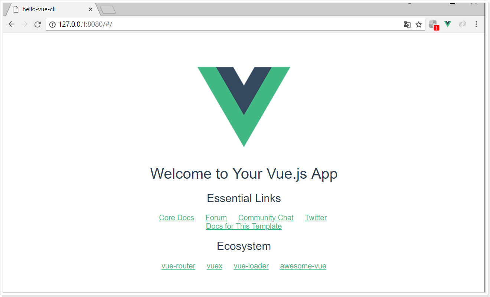
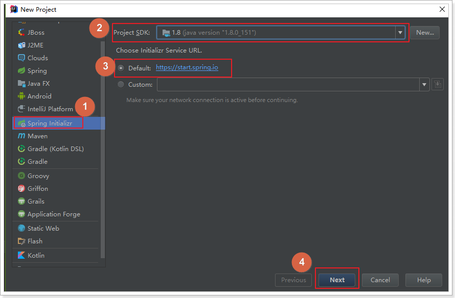
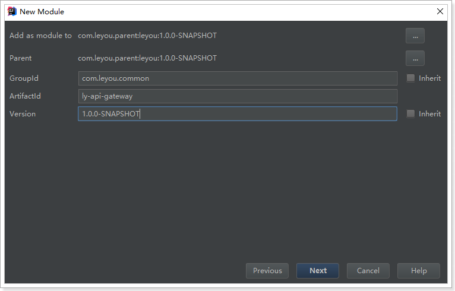
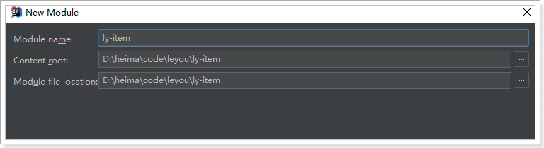

0.学习目标
- 了解电商行业
- 了解乐优商城项目结构
- 能独立搭建项目基本框架
- 能参考使用ES6的新语法
1.了解电商行业
学习电商项目，自然要先了解这个行业，所以我们首先来聊聊电商行业
1.1.项目分类
主要从需求方、盈利模式、技术侧重点这三个方面来看它们的不同
1.1.1.传统项目
各种企业里面用的管理系统（ERP、HR、OA、CRM、物流管理系统。。。。。。。）
- 需求方：公司、企业内部
- 盈利模式：项目本身卖钱
- 技术侧重点：业务功能
1.1.2.互联网项目
门户网站、电商网站：baidu.com、qq.com、taobao.com、jd.com ……
- 需求方：广大用户群体
- 盈利模式：虚拟币、增值服务、广告收益……
- 技术侧重点：网站性能、业务功能
而我们今天要聊的就是互联网项目中的重要角色：电商
1.2.电商行业的发展
1.2.1.钱景
近年来，中国的电子商务快速发展，交易额连创新高，电子商务在各领域的应用不断拓展和深化、相关服务业蓬勃发展、支撑体系不断健全完善、创新的动力和能力不断增强。电子商务正在与实体经济深度融合，进入规模性发展阶段，对经济社会生活的影响不断增大，正成为我国经济发展的新引擎。
中国电子商务研究中心数据显示，截止到 2012 年底，中国电子商务市场交易规模达 7.85万亿人民币，同比增长 30.83%。其中，B2B 电子商务交易额达 6.25 万亿，同比增长 27%。而 2011 年全年，中国电子商务市场交易额达 6 万亿人民币，同比增长 33%，占 GDP 比重上升到 13%；2012 年，电子商务占 GDP 的比重已经高达 15%。

1.2.2.数据
来看看双十一的成交数据：


2016双11开场30分钟，创造每秒交易峰值17.5万笔，每秒支付峰值12万笔的新纪录。菜鸟单日物流订单量超过4.67亿，创历史新高。
1.2.3.技术特点
从上面的数据我们不仅要看到钱，更要看到背后的技术实力。正是得益于电商行业的高强度并发压力，促使了BAT等巨头们的技术进步。电商行业有些什么特点呢？
- 技术范围广
- 技术新
- 高并发（分布式、静态化技术、缓存技术、异步并发、池化、队列）
- 高可用（集群、负载均衡、限流、降级、熔断）
- 数据量大
- 业务复杂
- 数据安全
1.3.常见电商模式
电商行业的一些常见模式：
- B2C：商家对个人，如：亚马逊、当当等
- C2C平台：个人对个人，如：咸鱼、拍拍网、ebay
- B2B平台：商家对商家，如：阿里巴巴、八方资源网等
- O2O：线上和线下结合，如：饿了么、电影票、团购等
- P2P：在线金融，贷款，如：网贷之家、人人聚财等。
- B2C平台：天猫、京东、一号店等
1.4.一些专业术语
SaaS：软件即服务
SOA：面向服务
RPC：远程过程调用
RMI：远程方法调用
PV：(page view)，即页面浏览量；
用户每1次对网站中的每个网页访问均被记录1次。用户对同一页面的多次访问，访问量累计
UV：(unique visitor)，独立访客
指访问某个站点或点击某条新闻的不同IP地址的人数。在同一天内，uv只记录第一次进入网站的具有独立IP的访问者，在同一天内再次访问该网站则不计数。
PV与带宽：
- 计算带宽大小需要关注两个指标：峰值流量和页面的平均大小。
- 计算公式是：网站带宽= ( PV 平均页面大小（单位MB） 8 )/统计时间（换算到秒）
- 为什么要乘以8？
- 网站大小为单位是字节(Byte)，而计算带宽的单位是bit，1Byte=8bit
- 这个计算的是平均带宽，高峰期还需要扩大一定倍数
PV、QPS、并发
QPS：每秒处理的请求数量。8000/s
比如你的程序处理一个请求平均需要0.1S，那么1秒就可以处理10个请求。QPS自然就是10，多线程情况下，这个数字可能就会有所增加。
由PV和QPS如何需要部署的服务器数量？
- 根据二八原则，80%的请求集中在20%的时间来计算峰值压力：
- （每日PV 80%） / （3600s 24 20%） 每个页面的请求数 = 每个页面每秒的请求数量
- 然后除以服务器的QPS值，即可计算得出需要部署的服务器数量
1.5.项目开发流程
项目经理：管人
产品经理：设计需求原型
测试：
前端：大前端。node
后端：
移动端：
项目开发流程图：

公司现状：
2.乐优商城介绍
2.1.项目介绍
- 乐优商城是一个全品类的电商购物网站（B2C）。
- 用户可以在线购买商品、加入购物车、下单、秒杀商品
- 可以品论已购买商品
- 管理员可以在后台管理商品的上下架、促销活动
- 管理员可以监控商品销售状况
- 客服可以在后台处理退款操作
- 希望未来3到5年可以支持千万用户的使用
2.2.系统架构
2.2.1.架构图
乐优商城架构缩略图，大图请参考课前资料：

2.2.2.系统架构解读
整个乐优商城可以分为两部分：后台管理系统、前台门户系统。
后台管理：
- 后台系统主要包含以下功能：
- 商品管理，包括商品分类、品牌、商品规格等信息的管理
- 销售管理，包括订单统计、订单退款处理、促销活动生成等
- 用户管理，包括用户控制、冻结、解锁等
- 权限管理，整个网站的权限控制，采用JWT鉴权方案，对用户及API进行权限控制
- 统计，各种数据的统计分析展示
- 后台系统会采用前后端分离开发，而且整个后台管理系统会使用Vue.js框架搭建出单页应用（SPA）。
- 预览图：

- 后台系统主要包含以下功能：
前台门户
- 前台门户面向的是客户，包含与客户交互的一切功能。例如：
- 搜索商品
- 加入购物车
- 下单
- 评价商品等等
- 前台系统我们会使用Thymeleaf模板引擎技术来完成页面开发。出于SEO优化的考虑，我们将不采用单页应用。

- 前台门户面向的是客户，包含与客户交互的一切功能。例如：
无论是前台还是后台系统，都共享相同的微服务集群，包括：
- 商品微服务：商品及商品分类、品牌、库存等的服务
- 搜索微服务：实现搜索功能
- 订单微服务：实现订单相关
- 购物车微服务：实现购物车相关功能
- 用户中心：用户的登录注册等功能
- 短信服务：完成各种短息的发送任务
- 授权服务：完成对用户的授权、鉴权等功能
- Eureka注册中心
- Zuul网关服务
- Spring Cloud Config配置中心
- …
3.商城管理系统前端页面
我们的后台管理系统采用前后端分离开发，而且整个后台管理系统会使用Vue.js框架搭建出单页应用SPA
3.1.什么事SPA
SPA，Single Page Application，即单页应用。整个后台管理系统只会出现一个HTML页面，剩下的一切页面的内容都是通过Vue组件来实现的。
这些Vue组件其实就是许多的JS文件。不过前端除了js，还有css、image、font等，甚至前端还开发出各种不同类型的扩展语言，这么多东西在打包、构建的过程中，人工来操作非常麻烦，因此就会有一些工具来帮助搭建前端项目，如：webpack、vue-cli
3.2.webpack
####3.2.1.介绍
Webpack 是一个前端资源的打包工具，它可以将js、image、css等资源当成一个模块进行打包。
中文官方网站：https://www.webpackjs.com/
官网给出的解释：
本质上，webpack 是一个现代 JavaScript 应用程序的静态模块打包器(module bundler)。当 webpack 处理应用程序时，它会递归地构建一个依赖关系图(dependency graph)，其中包含应用程序需要的每个模块，然后将所有这些模块打包成一个或多个 bundle。
为什么需要打包？
将许多碎小文件打包成一个整体，减少单页面内的衍生请求次数，提高网站效率。
将ES6的高级语法进行转换编译，以兼容老版本的浏览器。
将代码打包的同时进行混淆，提高代码的安全性。
####3.2.2.四个核心概念
学习Webpack，你需要先理解四个核心概念：
入口(entry)
webpack打包的起点，可以有一个或多个，一般是js文件。webpack会从启点文件开始，寻找启点直接或间接依赖的其它所有的依赖，包括JS、CSS、图片资源等，作为将来打包的原始数据
输出(output)
出口一般包含两个属性：path和filename。用来告诉webpack打包的目标文件夹，以及文件的名称。目的地也可以有多个。
加载器（loader）
webpack本身只识别Js文件，如果要加载非JS文件，必须指定一些额外的加载器（loader），例如css-loader。然后将这些文件转为webpack能处理的有效模块，最后利用webpack的打包能力去处理。
插件(plugins)
插件可以扩展webpack的功能，让webpack不仅仅是完成打包，甚至各种更复杂的功能，或者是对打包功能进行优化、压缩，提高效率。
3.3.vue-cli
3.3.1.介绍和安装
在开发中，需要打包的东西不止是js、css、html。还有更多的东西要处理，这些插件和加载器如果我们一一去添加就会比较麻烦。
幸好，vue官方提供了一个快速搭建vue项目的脚手架：vue-cli
使用它能快速的构建一个web工程模板。
官网：https://github.com/vuejs/vue-cli
cmd安装命令：npm install -g vue-cli
3.3.2.快速上手
新建一个model
idea中切换Terminal
用vue-cli命令，快速搭建一个webpack的项目：vue init webpack
3.3.3项目结构
安装好的项目结构：

入口文件：main.js
####3.3.4单文件组件
需要注意的是，我们看到有一类后缀名为.vue的文件，我们称为单文件组件
每一个.vue文件，就是一个独立的vue组件。类似于我们刚才写的login.js和register.js
只不过，我们在js中编写 html模板和样式非常的不友好，而且没有语法提示和高亮。
而单文件组件中包含三部分内容：
- template：模板，支持html语法高亮和提示
- script：js脚本，这里编写的就是vue的组件对象，还可以有data(){}等
- style：样式，支持CSS语法高亮和提示
每个组件都有自己独立的html、JS、CSS，互不干扰，真正做到可独立复用。
####3.3.5.运行
看看生成的package.json：
- 可以看到这引入了非常多的依赖，绝大多数都是开发期依赖，比如大量的加载器。
- 运行时依赖只有vue和vue-router
- 脚本有三个：
- dev：使用了webpack-dev-server命令，开发时热部署使用
- start：使用了npm run dev命令，与上面的dev效果完全一样，当脚本名为“start”时，可以省略“run”。
- build：等同于webpack的打包功能，会打包到dist目录下。
我们执行npm run dev 或者 npm start 都可以启动项目：
页面：

###3.4.Vuetify框架
3.4.1.为什么要学习UI框架
Vue虽然会帮我们进行视图的渲染，但样式还是由我们自己来完成。这显然不是我们的强项，因此后端开发人员一般都喜欢使用一些现成的UI组件，拿来即用，常见的例如：
- BootStrap
- LayUI
- EasyUI
- ZUI
然而这些UI组件的基因天生与Vue不合，因为他们更多的是利用DOM操作，借助于jQuery实现，而不是MVVM的思想。
而目前与Vue吻合的UI框架也非常的多，国内比较知名的如：
- element-ui：饿了么出品
- i-view：某公司出品
然而我们都不用，我们今天推荐的是一款国外的框架：Vuetify
官方网站：https://vuetifyjs.com/zh-Hans/

3.4.2.为什么是Vuetify
有中国的为什么还要用外国的？原因如下：
- Vuetify几乎不需要任何CSS代码，而element-ui许多布局样式需要我们来编写
- Vuetify从底层构建起来的语义化组件。简单易学，容易记住。
- Vuetify基于Material Design（谷歌推出的多平台设计规范），更加美观，动画效果酷炫，且风格统一
这是官网的说明：

缺陷：
- 目前官网虽然有中文文档，但因为翻译问题，几乎不太能看。
3.4.3.怎么用？
基于官方网站的文档进行学习：

我们重点关注UI components即可，里面有大量的UI组件，我们要用的时候再查看，不用现在学习，先看下有什么：


以后用到什么组件，就来查询即可。
4.搭建基础服务
4.1.技术选型
前端技术：
- 基础的HTML、CSS、JavaScript（基于ES6标准）
- JQuery
- Vue.js 2.0以及基于Vue的框架：Vuetify
- 前端构建工具：WebPack
- 前端安装包工具：NPM
- Vue脚手架：Vue-cli
- Vue路由：vue-router
- ajax框架：axios
- 基于Vue的富文本框架：quill-editor
后端技术：
- 基础的SpringMVC、Spring 5.0和MyBatis3
- Spring Boot 2.0.4版本
- Spring Cloud 最新版 Finchley.RC1
- Redis-4.0
- RabbitMQ-3.4
- Elasticsearch-5.6.8
- nginx-1.10.2：
- FastDFS - 5.0.8
- MyCat
- Thymeleaf
- JWT
4.2.开发环境
为了保证开发环境的统一，希望每个人都按照我的环境来配置：
- IDE：我们使用Idea 2017.3 版本
- JDK：统一使用JDK1.8
- 项目构建：maven3.3.9以上版本即可
- 版本控制工具：git
idea大家可以在我的课前资料中找到。另外，使用帮助大家可以参考课前资料的《idea使用指南.md》
4.3.域名
我们在开发的过程中，为了保证以后的生产、测试环境统一。尽量都采用域名来访问项目。
一级域名：www.leyou.com
二级域名：manage.leyou.com , api.leyou.com
我们可以通过switchhost工具来修改自己的host对应的地址，只要把这些域名指向127.0.0.1，那么跟你用localhost的效果是完全一样的。
switchhost可以去课前资料寻找。
4.4.创建父工程
创建统一的父工程：leyou，用来管理依赖及其版本，注意是创建project，而不是moudle

填写项目信息：

注意：
父工程不需要代码，只是管理依赖，因此我们不选择任何SpringCloud的依赖
跳过依赖选择。
然后将pom文件修改成我这个样子：
1 |
|
可以发现，我们在父工程中引入了SpringCloud等很多以后需要用到的依赖，以后创建的子工程就不需要自己引入了。
最后，删除自动生成的LeyouApplication启动类、测试类以及application.properties文件，我们不需要。
4.5.创建EurekaServer
4.5.1.创建工程
这个大家应该比较熟悉了。
我们的注册中心，起名为：ly-registry
这次我们就不Spring使用提供的脚手架了。直接创建maven项目，自然会继承父类的依赖：
选择新建module：

选择maven安装，但是不要选择骨架：

然后填写项目坐标，我们的项目名称为ly-registry:

选择安装目录，因为是聚合项目，目录应该是在父工程leyou的下面：

4.5.2.添加依赖
添加EurekaServer的依赖：
1 |
|
4.5.3.编写启动类
1 |
|
4.5.4.配置文件
1 | server: |
4.5.5.项目的结构：
目前，整个项目的结构如图：

4.6.创建Zuul网关
4.6.1.创建工程
与上面类似，选择maven方式创建Module，然后填写项目名称，我们命名为：ly-api-gateway

填写保存的目录：

4.6.2.添加依赖
这里我们需要添加Zuul和EurekaClient的依赖：
1 |
|
4.6.3.编写启动类
1 |
|
4.6.4.配置文件
1 | server: |
4.6.5.项目结构
目前，leyou下有两个子模块：
- ly-registry：服务的注册中心（EurekaServer）
- ly-gateway：服务网关（Zuul）
目前，服务的结构如图所示：

截止到这里，我们已经把基础服务搭建完毕，为了便于开发，统一配置中心（ConfigServer）我们留待以后添加。
4.7.创建商品微服务
既然是一个全品类的电商购物平台，那么核心自然就是商品。因此我们要搭建的第一个服务，就是商品微服务。其中会包含对于商品相关的一系列内容的管理，包括：
- 商品分类管理
- 品牌管理
- 商品规格参数管理
- 商品管理
- 库存管理
我们先完成项目的搭建：
4.7.1.微服务的结构
因为与商品的品类相关，我们的工程命名为ly-item.
需要注意的是，我们的ly-item是一个微服务，那么将来肯定会有其它系统需要来调用服务中提供的接口，因此肯定也会使用到接口中关联的实体类。
因此这里我们需要使用聚合工程，将要提供的接口及相关实体类放到独立子工程中，以后别人引用的时候，只需要知道坐标即可。
我们会在ly-item中创建两个子工程：
- ly-item-interface：主要是对外暴露的接口及相关实体类
- ly-item-service：所有业务逻辑及内部使用接口
调用关系如图所示：

4.7.2.创建父工程ly-item
依然是使用maven构建：

保存的位置：

不需要任何依赖，我们可以把项目打包方式设置为pom
1 |
|
4.7.3.创建ly-item-interface
在ly-item工程上点击右键，选择new > module:

依然是使用maven构建，注意父工程是ly-item：

注意：接下来填写的目录结构需要自己手动完成，保存到ly-item下的ly-item-interface目录中：

点击Finish完成。
此时的项目结构：

4.7.4.创建ly-item-service
与ly-item-interface类似，我们选择在ly-item上右键，新建module，然后填写项目信息：

填写存储位置，是在/ly-item/ly-item-service目录

点击Finish完成。
4.7.5.整个微服务结构
如图所示：

我们打开ly-item的pom查看，会发现ly-item-interface和ly-item-service都已经称为module了：
4.7.6.添加依赖
接下来我们给ly-item-service中添加依赖：
思考一下我们需要什么？
- Eureka客户端
- web启动器
- mybatis启动器
- 通用mapper启动器
- 分页助手启动器
- 连接池，我们用默认的Hykira
- mysql驱动
- 千万不能忘了，我们自己也需要
ly-item-interface中的实体类
这些依赖，我们在顶级父工程：leyou中已经添加好了。所以直接引入即可：
1 |
|
整个结构：

4.7.7.编写启动和配置
在整个ly-item工程中，只有ly-item-service是需要启动的。因此在其中编写启动类即可：
1 |
|
然后是全局属性文件：
1 | server: |
4.8.添加商品微服务的路由规则
既然商品微服务已经创建，接下来肯定要添加路由规则到Zuul中，我们不使用默认的路由规则。
在ly-gateway中修改配置文件：
1 | zuul: |
4.9.启动测试
我们分别启动：ly-registry，ly-api-gateway，ly-item-service

查看Eureka面板：

4.10.测试路由规则
为了测试路由规则是否畅通，我们是不是需要在item-service中编写一个controller接口呢？
其实不需要，Spring提供了一个依赖：actuator
只要我们添加了actuator的依赖，它就会为我们生成一系列的访问接口：
- /info
- /health
- /refresh
- …
添加依赖：
1 | <dependency> |
重启后访问Eureka控制台：
鼠标悬停在item-service上，会显示一个地址：

这就是actuator提供的接口，我们点击访问：

因为我们没有添加信息，所以是一个空的json，但是可以肯定的是：我们能够访问到item-service了。
接下来我们通过路由访问试试，根据路由规则，我们需要访问的地址是：
http://127.0.0.1:10010/api/item/actuator/info

4.11.通用工具模块
有些工具或通用的约定内容，我们希望各个服务共享，因此需要创建一个工具模块：ly-common
使用maven来构建module：

位置信息：

结构：

目前还不需要编码。
4.11.1导入工具类
JsonUtils.java
包括四个方法：
toString：把一个对象序列化为string类型，包含一个参数
- Object obj：原始java对象
toList：把一个json反序列化为List类型，需要指定一个集合中的元素，包含两个参数
- String json：要反序列化的json字符串
- Class eClass：集合中元素类型
toMap：把一个json反序列化为Map类型，需要指定集合中key和value类型，包含三个参数：
- String json：要反序列化的json字符串
- Class kClass：集合中key的类型
- Class vClass：集合中value的类型
nativeRead：把json字符串反序列化，当反序列化的结果比较复杂时。通过这个方法转换，参数：
String json：要反序列化的json字符串
TypeReference
type：在传递时，需要传递TypeReference的匿名内部类，把要返回的类型写在TypeReference中的泛型，则返回的就是泛型中类型 例如：
1
2
3List<User> users=JsonUtils.nativeRead(json, new TypeReference<List<User>>(){
});
4.11.2添加依赖
1 |
|
5.通用异常处理
5.1.场景预设
###5.1.1场景
我们预设这样一个场景，加入我们做新增商品，需要接受下面的参数:
1 | price:价格 |
然后对数据做简单的校验：
- 价格不能为空
新增时，自动形成id，然后随商品对象一起返回
5.1.2代码
在ly-item-interface
pojo：
1 |
|
在ly-item-service中
service：
1 |
|
在ly-item-service中
controller：
1 |
|
在ly-common中定义异常处理工具类
1 | //扫描启动类 |
###5.1.3测试如下
5.1.4自定义异常
将上述代码优化
在ly-common中定义通用异常拦截
CommonExceptionHander
1 |
|
异常对象：ExceptionEnums
1 |
|
自定义异常方法
1 |
|
通用异常结果：
1 |
|
修改ly-item-service
2
3
4
5
6
7
8
9
10
11
12
13
14
15
16
17
> ("item")
> public class ItemController {
>
> private ItemService itemService;
>
>
> public ResponseEntity<Item> saveItem(Item item) {
> if (item.getPrice()==null){
> //修改地方：调用ExceptionEnums.PRICE_CANNOT_BE_NULL
> throw new LyException(ExceptionEnums.PRICE_CANNOT_BE_NULL);
> }
> return ResponseEntity.status(HttpStatus.CREATED).body(itemService.saveItem(item));
> }
>
> }
>